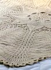
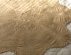

|
||
Premium Patterns Wintry Mix Mitts Love Bytes HawkeyeFree Patterns Kiddie Cadet Summerlin Ruffled Scarf Seamless DS Sock Simply Seamless Pouch Myriads of MushroomsExtras DIY Mitten Blocker Felt Patch Tutorial Yarn Dyeing Tutorial Needle Pouches Knitting Journal |
December 16, 2008 - Posted by Grace SchneblyA Cozy Christmas GiftProject Specs I've been in a rush to finish up several knits I have to send out to relatives this week, and this blanket is my newest FO. It's for my grandparents and I know they'll just love it! I was surprised at how quickly it knit up, considering it took less than a week from cast on until it was dry after blocking (though I did knit almost nonstop for 6 days). I can definitely see knitting one for myself someday after knowing that I could have a beautiful soft blanket in such a short amount of time. This pattern was a lot simpler than I thought it would be. It looked intimidating and complicated, but it really wasn't! You will have to get the pattern instructions from two different sources. The first half from The Canadian Spool Cotton Company. It's not charted out, which could be good or bad depending on your preference for lace patterns, but it goes quickly. Once you reach row 47, you switch over to Jared Flood's chat to knit the bulk of the pattern. I worked to the same row as Jared did, row 55, which creates a nice lap blanket sized throw. The very last step in the pattern is to switch back to the first set of instructions and work rnd 87. This bind off takes a lot of time and yarn so make sure you leave yourself plenty of both. This row says to "k2tog, O, k2tog, turn, p1, work 5 sts into next st, p1, sl, turn, and bind off 7 sts." I found the best way to work this bind off was not to slip the last stitch to the left needle, instead turn after the second purl stitch, bring the yarn between the needles, and then bind off. I wet blocked the blanket but it took a lot of pins. I probably used over 100! The best way is to start from the center and work out, measuring as you work to make sure that it's symmetric. Next time I'd steam block the edging after the wet block since it is hard to get every one of those little loops pinned out just right. Malabrigo is perfectly paired with this pattern, creating a throw that is soft and light but warm at the same time. It's perfect for a chilly morning and looks great thrown over the arm of a chair or couch. I got the yarn from the Thanksgiving day Backwards Loop sale so the blanket cost me less than $25 dollars. I'm finally getting a jump on my Christmas presents and don't have to get the rest finished until January. I've got two gift bags and a Shetland Triangle to send along with this blanket to my relatives in Washington, so I'll be posting about those soon! Other than that I have to finish my mom's present (it's already blocked, just needs the finishing touches), some baby items, and a few other things I don't want to reveal just yet. :) |
   Recent ReviewsRecent Posts
 Our Favorites
|
| © 2007 KathrynIvy.com | ||
{kind=link}
{kind=link}
{kind=link}